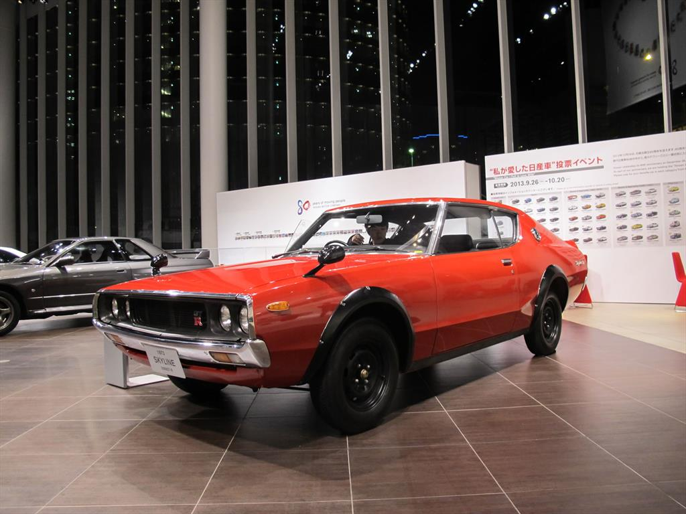
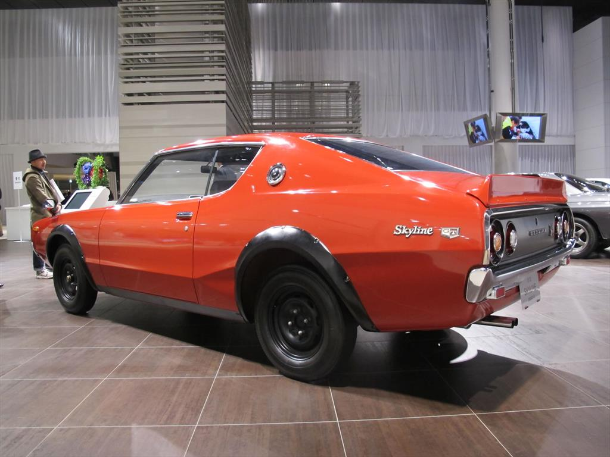

1972-1977
|  |  |
|
La generación del C110 se produjo de 1972 a 1977. En los 70 se exportó, el C110 y GC110 Skyline se vendieron como la serie K de Datsun, con modelos como el Datsun 160K, 180K y 240K. Las carrocerías fueron, de nuevo, berlina 4 puertas, cupé de capota dura 2 puertas y ranchera 5 puertas. El C110 tenía un estilo más exigente que su predecesor, particularmente en su versión ranchera, en la que, sin ventana entre los pilares C y D.[cita requerida] Su aspecto tenía influencias del Citroën SM de entre 1970 y 1975.[cita requerida] El C110 fue la primera versión en recuperar los pilotos traseros redondos y las luces de freno introducidas en 1963 de la generación anterior, con un aspecto más tradicional de la categoría Skyline. El estilo estaba ligeramente influenciado por otro cupé dos puertas, llamado Nissan Silvia, fabricado en 1975. El C110 Skyline se apodaba «Ken y Mary» o «Kenmeri» (ケンメリ) Skyline, derivado de la campaña publicitaria en Japón, donde lo conducía una pareja (Ken y Mary) que disfrutaba de los paisajes en el Skyline de Ken y Mary (ケンとメリーのスカイライン). El anuncio tuvo mucho éxito y quizá eso explique los buenos resultados de ventas del C110 en Japón. El Kenmeri también guarda un juego de palabras «Meriken» (メリケン), una palabra de un antiguo argot japonés para referirse a los «americanos», por lo que recordaba a los bólidos americanos el diseño del Skyline. También fue muy vendido en Australia (con el motor de 6 cil 2.4L, con nomenclatura «Datsun 240K»). Allí el 240K estaba al mismo precio que el Ford Falcon GT y el BMW Serie 5, en torno a unos 5 000 dólares australianos.
|
GT-R
|
El Skyline GT-R de capota dura vio la luz en septiembre de 1972 pero solo se fabricó hasta marzo de 1973, cuando Nissan cesó su producción. La crisis del petróleo hizo que la gente prefiriese coches económicos y los de alto rendimiento sufrieron una caída. No se exportó de forma oficial, sin embargo Nissan contempló la posibilidad de exportarlo a Australia. Solo se vendieron 197 unidades del KPGC110 GT-R en Japón, en tiendas «Nissan Performance» especializadas (antes de llamarse NISMO). Este fue el último GT-R durante 16 años hasta el BNR32 en 1989.
|